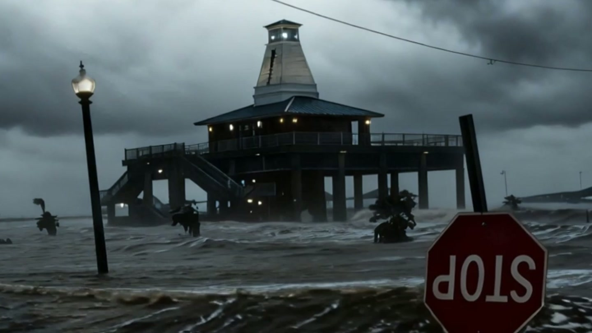

SCIENCE × AI × ART
让想象，
成为下一种生命。
超写实、抽象与未来，在此交汇。
一次关于科学、AI 与艺术的共同想象。
想象，没有终点PLUSX 2026
A WORLD OF POSSIBILITIES
播放精选短片万物有生。
以好奇，重新看见世界
从亿万年前，
到尚未抵达的未来。
当科学提出问题，艺术让它可见，AI 让想象继续。PlusX「未来生命」影像精选，邀请你穿过五种创作视角，重新思考身体、记忆，以及与万物共生的可能。
A shared imagination of science, AI and art.
五种视角。
无限种未来。
每支 90 秒，每支 20 部作品。
选择一种视角，进入它的世界。
本轮以超写实、抽象与未来感为策展主线，五支影像全部重新取样编排。类别依据参赛者自选方向，作品可跨类别出现；影片与创作者署名保留于影像中。

特别策展 / 一段新的故事
留给明天的海
THE SEA WE LEAVE
以「深时记忆」参赛影像重构的双语短篇。